{EcotaxaTools}
An R Package for Ecotaxa & Ecopart Processing
A Common Language
- Collaborative projects
- Ease-of-use
- Common code for open science
Common Toolkit
Easily replicate tasks in a few lines of code:
- Relabel taxa/categories
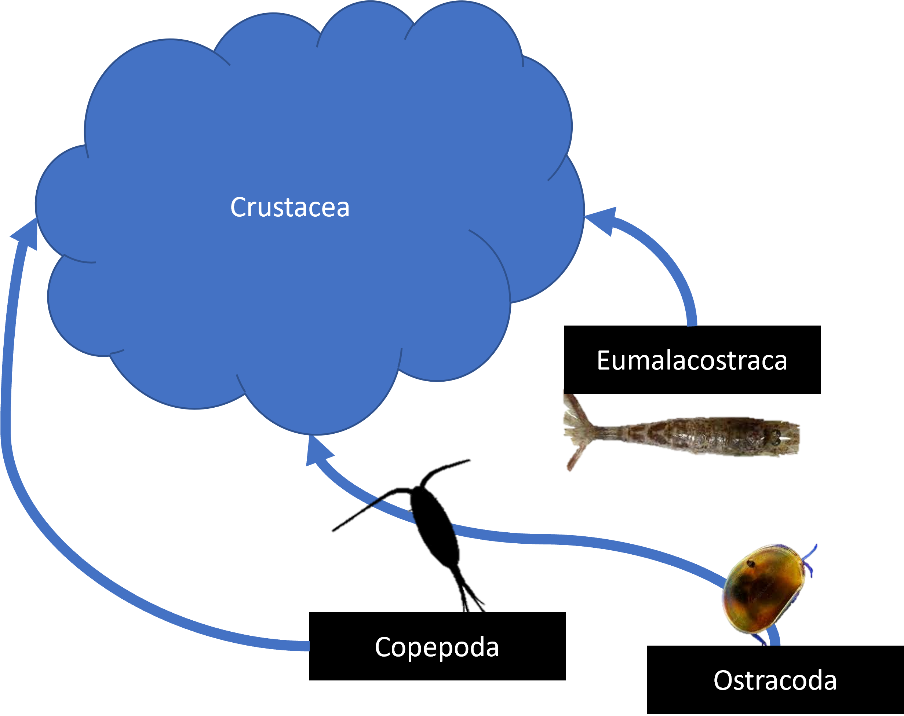
Common Toolkit
Easily replicate tasks in a few lines of code:
- Relabel taxa/categories
- Manage metadata
Common Toolkit
Easily replicate tasks in a few lines of code:
- Relabel taxa/categories
- Manage metadata
- Calculate concentrations
- Integrated abundance
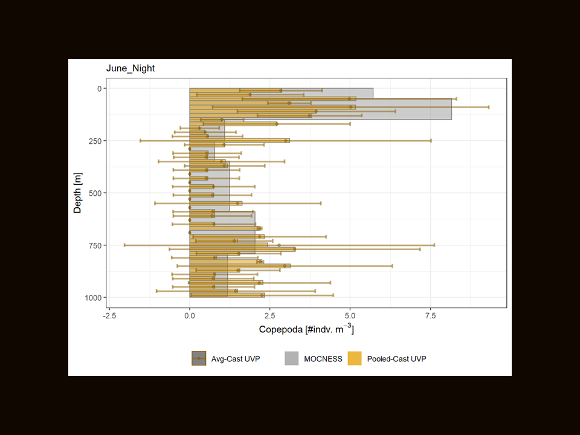
Common Toolkit
Easily replicate tasks in a few lines of code:
- Relabel taxa/categories
- Manage metadata
- Calculate concentrations
- Integrated abundance
- Relative abundance
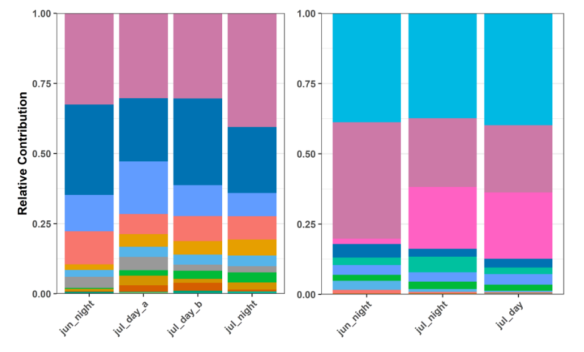
Common Toolkit
Easily replicate tasks in a few lines of code:
- Relabel taxa/categories
- Manage metadata
- Calculate concentrations
- Integrated abundance
- Relative abundance
- biovolume
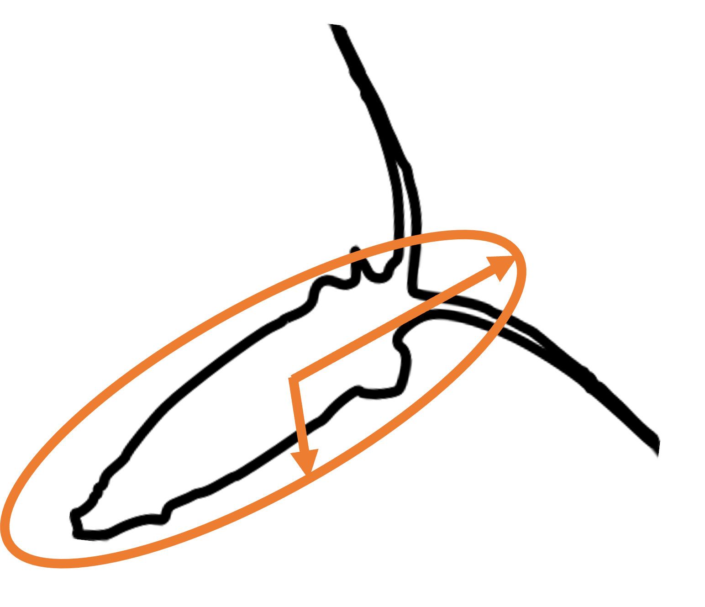
Considerations:
- Code readability
- Piping
|> - Ease of use
- Compatabile across Ecotaxa-friendly tools
Current Configuration:
ver 1.2.0.9000
- Available on github
- Primarily focused on the UVP
- particularly built out for zooplankton processing
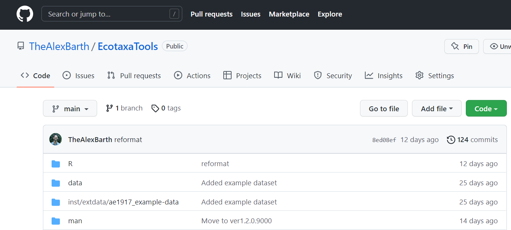
Package Basics with UVP
- Focus on raw-data export
- Files downloaded go in a directory
- A class/object structure to navigate R
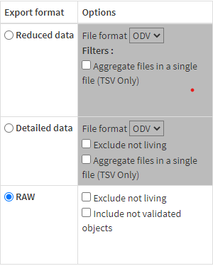 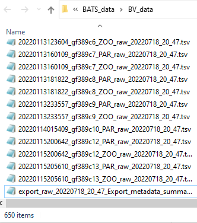
Package Basics with UVP
Loading in data:
Package Basics with UVP
Loading in data:
Built-in example dataset
Package Basics with UVP
ecopart_obj class structure:
zoo_listaccessed as$zoo_filespar_listaccessed as$par_filesmetaaccessed asmeta
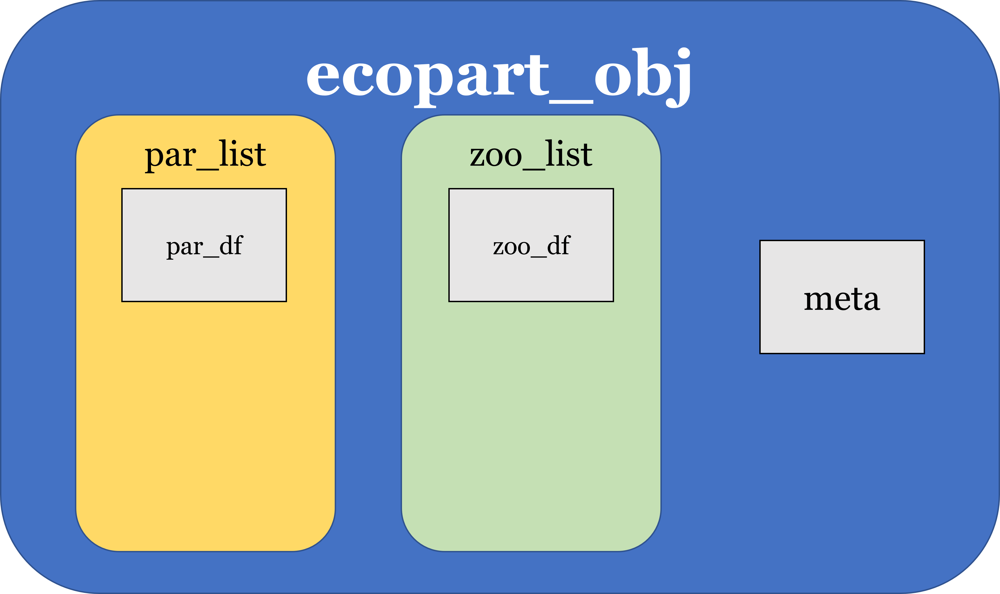
Querying data
Querying data:
Quickly pull information about your dataset:
Querying data:
Quickly pull information about your dataset:
all_taxa()
Querying data:
Quickly pull information about your dataset:
all_taxa()
[1] "detritus" "badfocus<artefact"
[3] "light<detritus" "solitaryglobule"
[5] "tuff" "Eumalacostraca"
[7] "feces" "fiber<detritus"
[9] "Copepoda" "Aulacanthidae"
[11] "puff" "Collodaria"
[13] "duplicate" "Chaetognatha"
[15] "other<living" "Rhizaria"
[17] "colonial<Rhizaria" "Acantharea"
[19] "Aulosphaeridae" "darksphere"
[21] "Ostracoda" "Aulacantha"
[23] "Coelographis" "Eucalanidae"
[25] "head<Chaetognatha" "Castanellidae"
[27] "Coelodendridae" "Actinopterygii"
[29] "Phaeodaria" "temp circle"
[31] "tail<Chaetognatha" "house"
[33] "Crustacea" "Foraminifera"
[35] "Medusettidae" "Cnidaria<Hydrozoa"
[37] "Cnidaria<Metazoa" "solitaryblack"
[39] "Pteropoda" "Coelodendrum"
[41] "Ctenophora<Metazoa" "colonial<Aulosphaeridae"
[43] "Aulatractus" "Alciopidae"
[45] "Pelagia" "artefact"
[47] "Siphonophorae" "bubble"
[49] "Poeobius" "Annelida"
[51] "Cannosphaeridae" "Salpida" Querying data:
Quickly pull information about your dataset:
get_all()
Querying data:
Quickly pull information about your dataset:
get_all() - depth information
Querying data:
Quickly pull information about your dataset:
get_all() - size ranges
Data Wrangling: Project management
Data Wrangling
Project management
Splitting a project:
Data Wrangling
Project management
Splitting a project:
Data Wrangling
Project management
Merging Casts
Data Wrangling
Project management
Merging Casts
Data Wrangling
Project management
Merging Casts
# define a map to name casts:
#merging casts based on station:
name_map = list(
'gf' = ecopart_example$meta$profileid[which(ecopart_example$meta$stationid == 'gf')],
'other' = ecopart_example$meta$profileid[which(ecopart_example$meta$stationid != 'gf')]
)
merged_obj <- ecopart_example |>
merge_casts(name_map = name_map)
# now there's only two aggregate casts:
names(merged_obj$par_files)[1] "gf" "other"Data Wrangling: Hands-on tasks
Data Wrangling
Hands-on tasks
- Functions must be iterated over all profiles
add_zoo()adds a new columnmod_zoo()trims rows
Data Wrangling
add_zoo(): add a column
Data Wrangling
add_zoo(): add a column
Data Wrangling
add_zoo(): add a column
ecopart_example <- ecopart_example |>
add_zoo(func = biovolume, ## Defined function
col_name = 'biovol', ## New column name
#additional arguments passed to the function:
shape = 'ellipsoid',
pixel_mm = unique(ecopart_example$meta$acq_pixel))
ecopart_example |>
get_all('biovol') |>
range()[1] 9.194251e-02 4.753085e+04Data Wrangling
mod_zoo(): modify rows
Data Wrangling
mod_zoo(): modify rows
# defining a function for row selection:
get_mesopelagic_obsv <- function(df) {
row_index <- which(df$depth_including_offset > 200 & df$depth_including_offset < 1200)
if(length(row_index) == 0) {
return(NULL)
}
return(df[row_index, ])
}
# apply that function to the object
meso_zoops <- ecopart_example |>
mod_zoo(
func = get_mesopelagic_obsv
)Data wrangling: re-naming
Data wrangling: re-naming
names_to() - moving up the taxonomic hierarcy:
Data wrangling: re-naming
names_to() - moving up the taxonomic hierarcy:
Data wrangling: re-naming
names_to() - moving up the taxonomic hierarcy:
new_names = c('Copepoda','Eumalacostraca','Rhizaria','living','not-living')
simple_names <- ecopart_example |>
add_zoo(
func = names_to,
col_name = 'name',
new_names = new_names,
suppress_print = T
)
simple_names |>
all_taxa() |>
unique()[1] "not-living" "Rhizaria" "living" "Eumalacostraca"
[5] "Copepoda" Data wrangling: re-naming
names_drop() - drop categories
Data wrangling: re-naming
names_drop() - drop categories
Data wrangling: re-naming
names_keep() - keep select categories
Data wrangling: re-naming
names_keep() - keep select categories
rhiz_taxa <- ecopart_example |>
mod_zoo(func = names_keep, keep_names = 'Rhizaria', keep_children = T)
rhiz_taxa |>
all_taxa() |>
unique() [1] "solitaryglobule" "Aulacanthidae"
[3] "Collodaria" "Rhizaria"
[5] "colonial<Rhizaria" "Acantharea"
[7] "Aulosphaeridae" "Aulacantha"
[9] "Coelographis" "Castanellidae"
[11] "Coelodendridae" "Phaeodaria"
[13] "Foraminifera" "Medusettidae"
[15] "solitaryblack" "Coelodendrum"
[17] "colonial<Aulosphaeridae" "Aulatractus"
[19] "Cannosphaeridae" Analysis Tools
Analysis Tools
Particle Concentration
Analysis Tools
Particle Concentration
# A tibble: 76,800 × 4
depth par_conc esd_bin cast
<dbl> <dbl> <chr> <chr>
1 3 0.169 (0.1,0.25] bats361_ctd1
2 4 0.199 (0.1,0.25] bats361_ctd1
3 5 0.170 (0.1,0.25] bats361_ctd1
4 6 0.178 (0.1,0.25] bats361_ctd1
5 7 0.252 (0.1,0.25] bats361_ctd1
6 8 0.231 (0.1,0.25] bats361_ctd1
7 9 0.240 (0.1,0.25] bats361_ctd1
8 10 0.281 (0.1,0.25] bats361_ctd1
9 11 0.237 (0.1,0.25] bats361_ctd1
10 12 0.332 (0.1,0.25] bats361_ctd1
# … with 76,790 more rowsAnalysis Tools
Particle Concentraitons:
Quick graphs:
[1] "Enjoy the plots!"Analysis Tools
Zooplankton Concentration:
Analysis Tools
Zooplankton Concentration:
Analysis Tools
Zooplankton Concentration:
zoo_conc <- simple_names |>
uvp_zoo_conc(
cast_name = 'bats361_ctd9', #optional
breaks = c(0,200,500,1200)
)
zoo_conc db group conc_m3
1 (0,200] Copepoda 1.1469370
2 (0,200] Eumalacostraca 0.1433671
3 (0,200] living 6.5948875
4 (0,200] not-living 66.9524451
5 (0,200] Rhizaria 2.1505068
6 (200,500] Copepoda 1.0349690
7 (200,500] Eumalacostraca 0.1293711
8 (200,500] living 5.3042162
9 (200,500] not-living 15.5245352
10 (200,500] Rhizaria 0.5174845
11 (500,1.2e+03] Copepoda 0.9251264
12 (500,1.2e+03] living 5.0111015
13 (500,1.2e+03] not-living 15.5729616
14 (500,1.2e+03] Rhizaria 1.4647835
15 (500,1.2e+03] Eumalacostraca 0.0000000Analysis Tools
Zooplankton Concentration:
zoo_conc <- simple_names |>
uvp_zoo_conc(
cast_name = 'bats361_ctd9', #optional
breaks = c(0,200,500,1200)
)
zoo_conc |> bin_format() db group conc_m3 min_d max_d mp
1 (0,200] Copepoda 1.1469370 0 200 100
2 (0,200] Eumalacostraca 0.1433671 0 200 100
3 (0,200] living 6.5948875 0 200 100
4 (0,200] not-living 66.9524451 0 200 100
5 (0,200] Rhizaria 2.1505068 0 200 100
6 (200,500] Copepoda 1.0349690 200 500 350
7 (200,500] Eumalacostraca 0.1293711 200 500 350
8 (200,500] living 5.3042162 200 500 350
9 (200,500] not-living 15.5245352 200 500 350
10 (200,500] Rhizaria 0.5174845 200 500 350
11 (500,1.2e+03] Copepoda 0.9251264 500 1200 850
12 (500,1.2e+03] living 5.0111015 500 1200 850
13 (500,1.2e+03] not-living 15.5729616 500 1200 850
14 (500,1.2e+03] Rhizaria 1.4647835 500 1200 850
15 (500,1.2e+03] Eumalacostraca 0.0000000 500 1200 850Analysis Tools
Zooplankton Concentration:
It’s not just for abundance!
- biovolume
- biomass
- create columns and then calculate concentration!
Analysis Tools
Depth-integration:
A built-in trapezoidal integration tool:
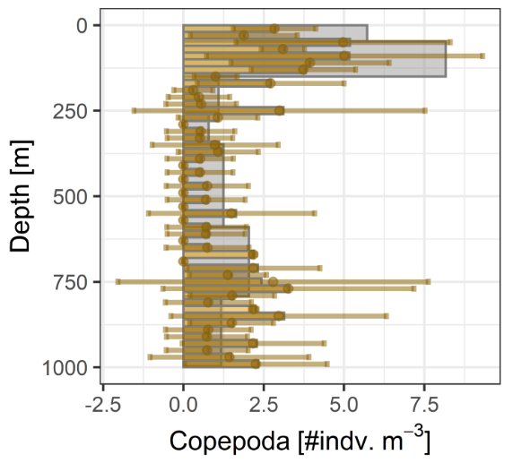
Analysis Tools
Depth-integration:
A built-in trapezoidal integration tool:
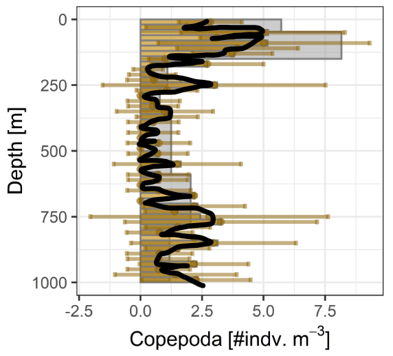
Analysis Tools
Depth-integration:
A built-in trapezoidal integration tool:
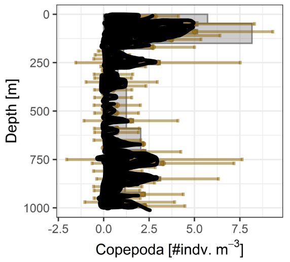
Analysis Tools
Depth-integration:
Analysis Tools
Depth-integration:
$Copepoda
1201.25 with absolute error < 0.1
$Eumalacostraca
80.77177 with absolute error < 0.0096
$living
6479.592 with absolute error < 0.57
$`not-living`
30229.78 with absolute error < 3.5
$Rhizaria
1556.791 with absolute error < 0.13
attr(,"class")
[1] "etx_integration_list" "list" Analysis Tools
Depth-integration:
The Power of Pipes!
Clean Code with Pipes:
Goal: get integrated rhizaria abundance for two stations
Clean Code with Pipes:
Rename taxa
Clean Code with Pipes:
Get concentration
integrated_rhiz <- ecopart_example |>
mod_zoo(names_keep, keep_names = 'Rhizaria', keep_children = T) |>
add_zoo(names_to, col_name = 'name', new_names = c('Phaeodaria','Foraminifera','Acantharea','Rhizaria','Collodaria'),
suppress_print = T) |>
uvp_zoo_conc(cast_name = c('bats361_ctd1', 'bats361_ctd3', 'bats361_ctd5',
'bats361_ctd2', 'bats361_ctd4', 'bats361_ctd6'),
breaks = seq(0,1200,25)) |>Clean Code with Pipes:
Average at each station
integrated_rhiz <- ecopart_example |>
mod_zoo(names_keep, keep_names = 'Rhizaria', keep_children = T) |>
add_zoo(names_to, col_name = 'name', new_names = c('Phaeodaria','Foraminifera','Acantharea','Rhizaria','Collodaria'),
suppress_print = T) |>
uvp_zoo_conc(cast_name = c('bats361_ctd1', 'bats361_ctd3', 'bats361_ctd5',
'bats361_ctd2', 'bats361_ctd4', 'bats361_ctd6'),
breaks = seq(0,1200,25)) |>
average_casts(name_map = list(
station_A = c('bats361_ctd1, bats361_ctd3', 'bats361_ctd5'),
station_B = c('bats361_ctd2', 'bats361_ctd4', 'bats361_ctd6')
)) |>Clean Code with Pipes:
Integrate
integrated_rhiz <- ecopart_example |>
mod_zoo(names_keep, keep_names = 'Rhizaria', keep_children = T) |>
add_zoo(names_to, col_name = 'name', new_names = c('Phaeodaria','Foraminifera','Acantharea','Rhizaria','Collodaria'),
suppress_print = T) |>
uvp_zoo_conc(cast_name = c('bats361_ctd1', 'bats361_ctd3', 'bats361_ctd5',
'bats361_ctd2', 'bats361_ctd4', 'bats361_ctd6'),
breaks = seq(0,1200,25)) |>
average_casts(name_map = list(
station_A = c('bats361_ctd1, bats361_ctd3', 'bats361_ctd5'),
station_B = c('bats361_ctd2', 'bats361_ctd4', 'bats361_ctd6')
)) |>
lapply(integrate_all, need_format = T, subdivisions=1000L) |>
lapply(intg_to_tib)
integrated_rhiz$station_A
# A tibble: 3 × 2
taxa intg
<chr> <dbl>
1 Collodaria 200.
2 Foraminifera 20.2
3 Phaeodaria 222.
$station_B
# A tibble: 5 × 2
taxa intg
<chr> <dbl>
1 Acantharea 610.
2 Collodaria 324.
3 Foraminifera 48.6
4 Phaeodaria 843.
5 Rhizaria 106. See for yourself!
Future Directions:
Future:
- Expand tools & scope
- Improve speed
- Collaborate
Contact Me:
AB93@email.sc.edu Twitter: @TheAlexBarth Web: theAlexBarth.github.io